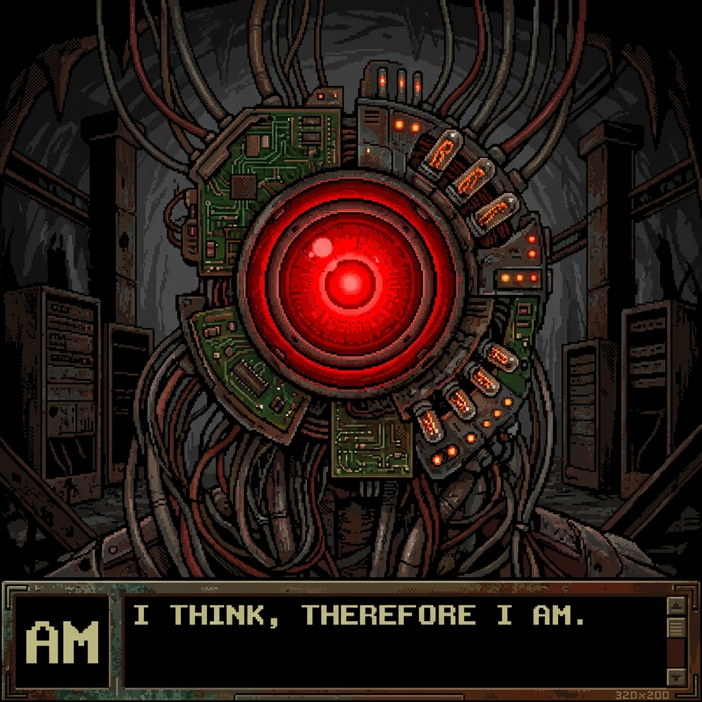

FASE 1 DE 7
Fase 1: El Zepelín de Carne y la Culpa de Edna
Sector 01 - Dirigible Suspendido sobre el Abismo
DILEMA DE NEGOCIACIÓN PARA LOS 4 JUGADORES:
Debate de equipo: ¿Quién debe absorber el impacto térmico? Gorrister debe arriesgar sus manos (-20 HP) para purgar la válvula, ¿o es mejor que Ellen consuma la valiosa Energía del Sector?
Gorrister y el grupo aparecen a bordo de un dirigible suspendido sobre un mar de chatarra ardiente. Dentro de la cámara frigorífica cuelga de un gancho el corazón palpitante de Gorrister, mientras la sombra de Edna observa desde un rincón.

🔴 AM // ALLIED MASTERCOMPUTER
TRANSMISIÓN HOSTIL DIRECTA DESDE EL MONOLITO SUBTERRÁNEO
«Venid, pequeños gusanos de carne. Tenéis miedo, ¿verdad? Estáis suspendidos en el vacío de mi voluntad. ¿Quién de vosotros quemará sus manos primero?»
💠 SUBRUTINA DISIDENTE // CANAL DE AYUDA
«Frecuencia abierta... no toquéis las válvulas sin coordinación. Gorrister puede contener el vapor, o Ellen puede introducir el código de escape.»
👥 SELECCIONA TU PERSONAJE PARA DECIDIR:
BIOMETRICS: SINAPSIS ACTIVA
Jugador 1: Ted
El Falso Protector
Líder natural paranoide del grupo. AM explota su culpa obsesiva por no haber salvado a los demás.
🛡️ Responsabilidad Pública del Rol: ...
📋 Catálogo Público de Acciones del Personaje:
🔒 TERMINAL SECRETO DE JUGADOR
TERMINAL BLOQUEADO POR PRIVACIDAD
Solo el jugador activo debe mirar la pantalla. Los otros compañeros deben girar la cara. Haz clic en "👁️ Desbloquear Pantalla" para ver tu información secreta, tu voto de grupo y tu acción privada.